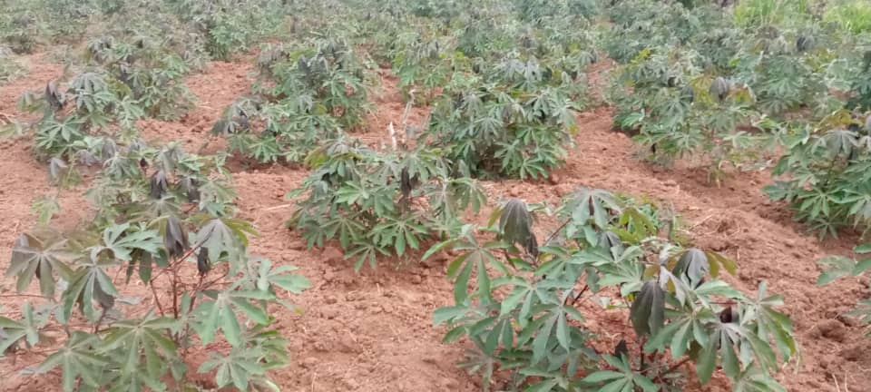

Comprehensive Curriculum
Our curriculum at St. Peter's Nkokonjeru SS is designed to be rigorous, relevant, and engaging. We follow the **Uganda National Curriculum Development Centre (NCDC)** framework, enhanced with modern teaching methodologies to foster critical thinking, creativity, and problem-solving skills.
From early years to pre-university, students are exposed to a broad range of subjects, encouraging them to explore their interests and develop a strong foundation for future learning. We emphasize both theoretical understanding and practical application for Secondary School Curriculum (O-Level & A-Level).

Academic Departments
Science & Technology
Biology, Chemistry, Physics, Mathematics, Computer Science, Agriculture
Humanities
History, Geography, Literature, Religious Studies, General Paper
Languages
English, Luganda, Kiswahili
Arts & Sports
Music, Fine Art, Drama, Physical Education, Various Sports
Each department is staffed by highly qualified and passionate educators dedicated to student success.

Examinations & Assessment
Assessment at St. Peter's Nkokonjeru SS is continuous and multifaceted, designed to monitor student progress, identify areas for improvement, and prepare them effectively for external examinations. We employ a mix of formative and summative assessments.

Our Examination Process:
- Regular Class Tests & Quizzes
- Mid-Term & End-of-Term Examinations
- Project-Based Assessments
- Continuous Teacher Assessment
- Preparation for National Examinations:
- Uganda Certificate of Education (UCE)
- Uganda Advanced Certificate of Education (UACE)
Our academic support programs provide extra assistance to students who need it, ensuring no one is left behind.
Academic Facilities
St. Peter's Nkokonjeru SS is equipped with modern academic facilities that enhance the learning experience and provide students with the resources they need to excel.

Science Laboratories
Well-equipped labs for Physics, Chemistry, and Biology practicals.
Computer Laboratories
Modern computer suites with internet access for ICT and research.

School Library
A vast collection of books, journals, and digital resources for extensive research.

Modern Classrooms
Spacious and conducive learning environments with modern teaching aids.

Art & Design Studio
A creative space for visual arts, equipped with necessary tools and materials.

Main Hall
For large group sessions, presentations, and special academic events.
Outstanding Exam Results

St. Peter's Nkokonjeru SS prides itself on consistently achieving excellent academic results in school based and National examinations. Our students are well-prepared for higher education, with many gaining admission to top universities worldwide.
We believe that strong results are a reflection of dedicated teaching, a supportive learning environment, and the hard work of our students. We provide comprehensive support and resources to ensure every student reaches their full potential.
- **2025 Average UCE Score:*25* Excellent pass rate
- **2025 Average UACE Score:*14.5* Strong performance leading to university admissions
- **Over 50%** of our students achieve first-grade passes in national exams.